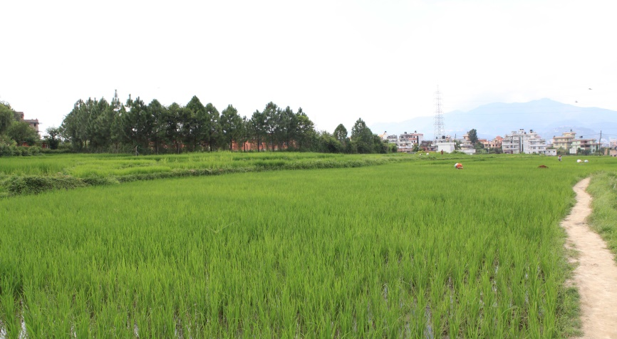
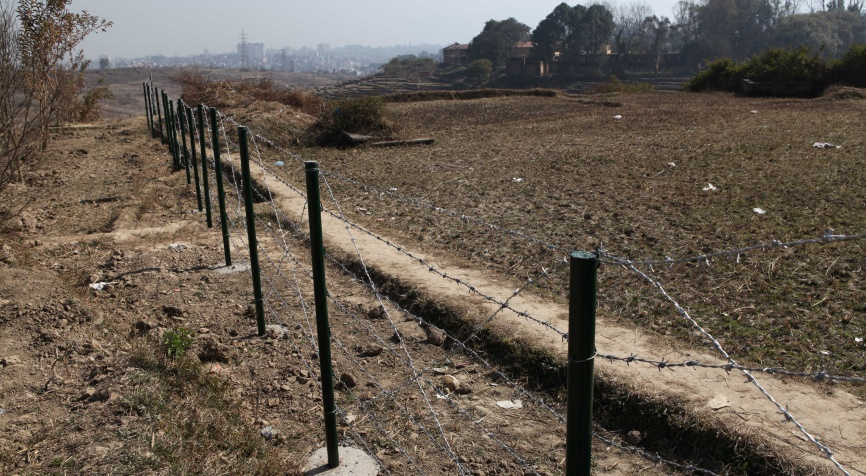
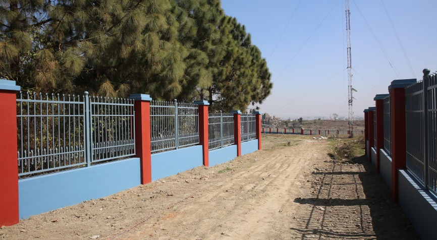
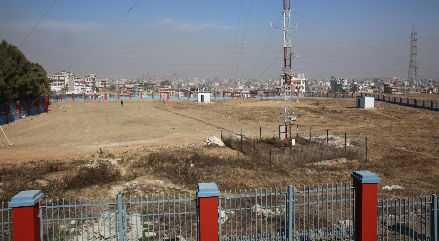
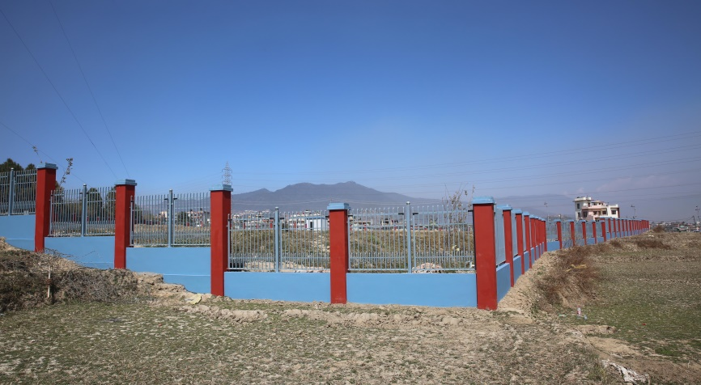
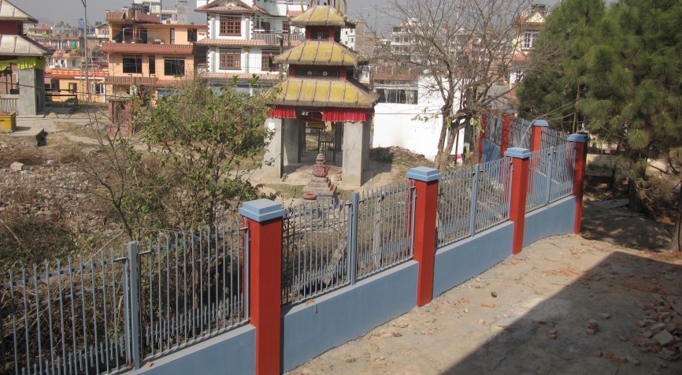

中国科学院加德满都科教中心（以下简称“科教中心”）位于尼泊尔特里布文大学Kirtipur主校区，占地面积17648平方米，由工作区和观测场两部分组成。2014年5月，青藏高原所与特里布文大学签订了用地协议；同年12月，科教中心开始采用铁丝网简易围栏对观测场进行封闭管理。2015年4月25日，尼泊尔发生了8.1级地震，周边居民涌入观测场搭建临时帐篷抗震，新建的铁丝网围栏遭到破坏，此后建设的彩钢板观测房也发生过人为损坏现象。为了提高观测设施的安全性，2016年9月，科教中心与尼泊尔CEAD建筑与咨询公司签定了施工合同，将铁丝网围栏改造为铁艺围栏，包括工作区的旧围栏。铁艺围栏施工总长度为580米，基础埋深不少于80厘米。在项目实施过程中，周边居民以小区道路需要拓宽为由，多次阻拦北侧围栏的正常施工。在特里布文大学相关部门的协调下，科教中心适度调整了建设方案，施工得以恢复。围栏改造工程在2017年1月初步完工，经过两次整改后，2月21日通过了研究所组织的现场验收。该工程完成后，科教中心将在工作区和观测场安装一套视频监控系统，以提高园区的安全管理水平。

观测场地原为农田

2015年1月建成的铁丝网简易围栏

改造后的铁艺围栏（局部，下同）


